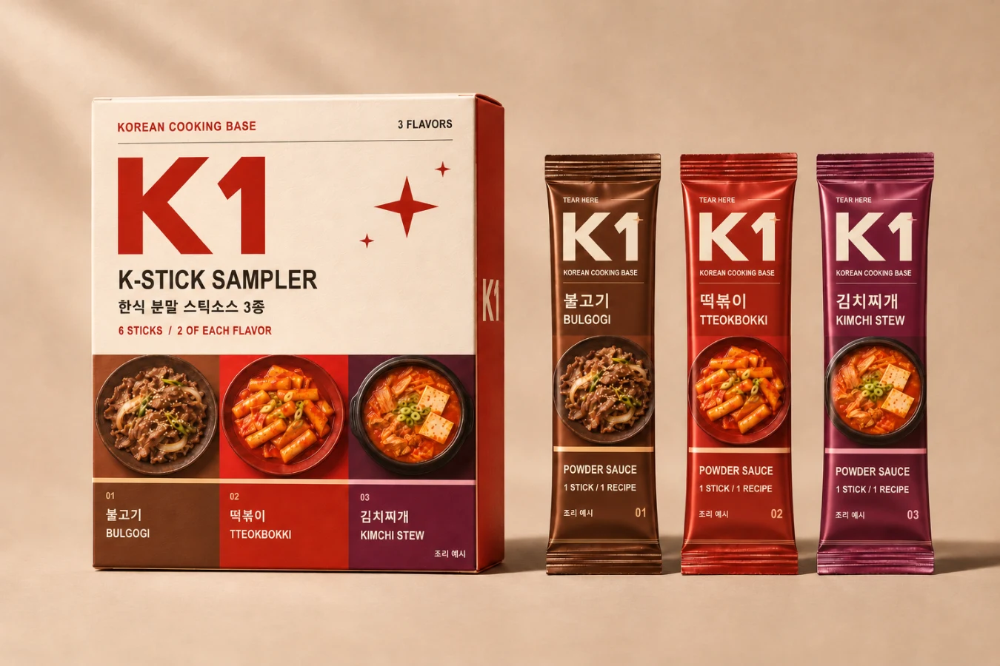
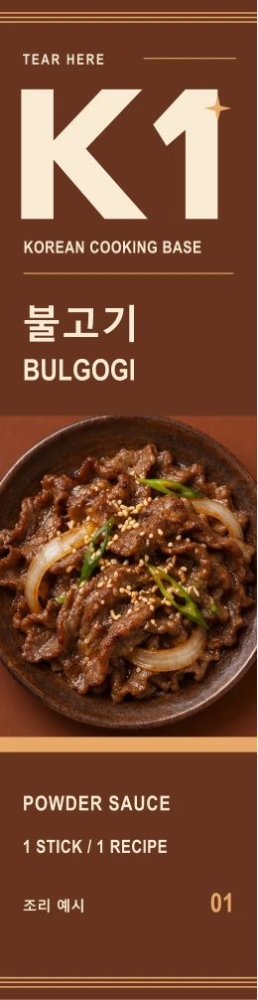
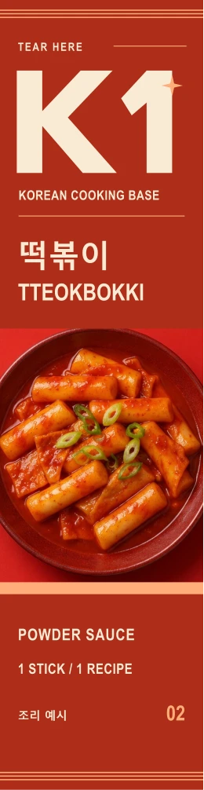
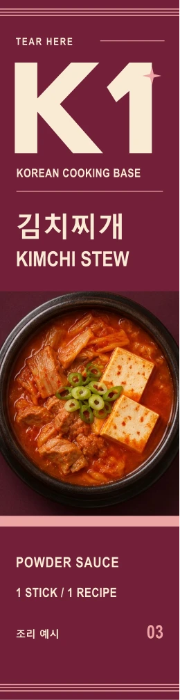
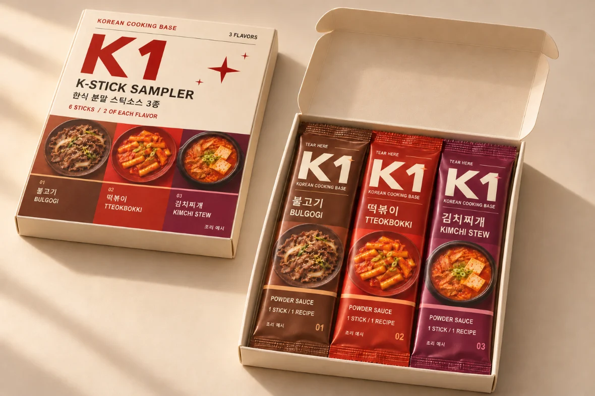

KOREAN PANTRY MADE SIMPLE
라면 스프처럼 톡,
한식 한 끼.
여러 가지 양념을 계량할 필요 없이, 한 번 조리할 분량을 스틱 한 포에 담는 방식입니다. QR로 재료와 조리법을 바로 확인하세요.
1회분 정량분말 스틱앱 설치 없는 QR

패키지 연출 시안PILOT REVIEW / 3차 멘토링
시제품 검증 후보: 떡볶이 · 채소 스톡 · 치킨 스톡
떡볶이와 채소 스톡은 우선 검증 후보입니다. 치킨 스톡의 미국 판매는 수입 요건 확인 뒤 검토합니다. 제품 규격과 조리 분량은 미확정입니다.
01 한 번 조리에 한 포02 QR로 조리법 확인03 익숙한 재료로 한식
01 / THE FIRST COLLECTION패키지 디자인 3종 · 출시 구성 아님
패키지
디자인 시안.
불고기·떡볶이·김치찌개는 기존 패키지 표현을 검토하기 위한 디자인 시안입니다. 위의 시제품 검증 후보 구성과는 다릅니다.
NO. 01K1 K-STICK
BULGOGI불고기 베이스
달콤 짭짤한 맛. 따뜻한 밥 위에 얹는 불고기 덮밥부터.
불고기 레시피 보기 NO. 02K1 K-STICK
NO. 03K1 K-STICK

샘플러 개봉 연출 · 실제 구성 미확정02 / SCAN, TEAR, COOK
찍고, 톡 넣고,
내가 만드는 한식.
- 01
레시피를 열어요포장지의 QR을 찍으면 앱 설치 없이 모바일 웹 레시피가 열려요.
- 02
재료를 준비해요가까운 곳에서 구할 수 있는 재료와 대체 식재료를 확인해요.
- 03
한 포를 톡 넣어요소스를 따로 계량하는 대신 한 포를 쓰고, 메뉴에 맞춰 조리해요.
QR이 여는 레시피 체험하기 04 / STAY IN THE LOOP
첫 출시 소식을
받아보세요.
시제품과 첫 출시 일정을 준비하고 있어요.
출시 알림
현재 미리보기에서는 이메일을 수집하지 않습니다. 출시 알림 채널이 연결되기 전에는 신청할 수 없어요.
협업 문의